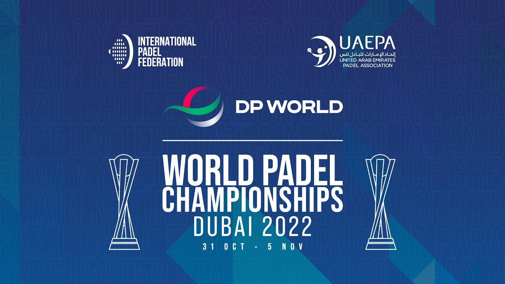
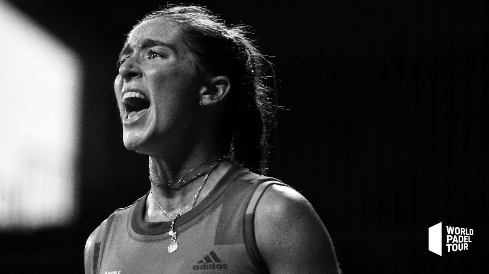
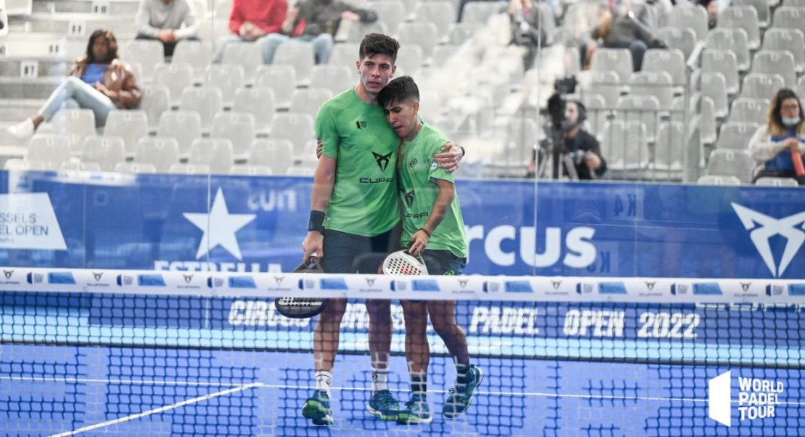
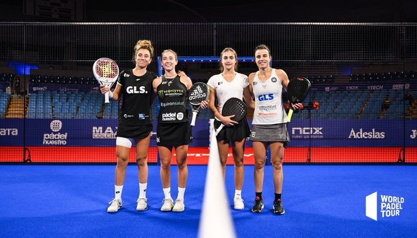

Torneos
World Padel championship
Desde el próximo lunes 31 de octubre y hasta el 5 de noviembre, Dubai se convierte en el epicentro del pádel mundial. Allí se disputa el XVI Campeonato del Mundo de Pádel, una cita que reunirá a las selecciones de 20 federaciones nacionales
El Campeonato del mundo de pádel es una competición internacional de pádel que se disputa cada dos años desde 1992, siendo la primera edición celebrada en España en el recinto de la Exposición Universal de Sevilla y en el club Golf La Moraleja, en Alcobendas, Madrid. Este evento es organizado por la Federación Internacional de Pádel,1 y cuenta con una versión femenina y una versión masculina de dicho evento. Es el torneo más importante de pádel en el mundo a nivel selecciones/países. El equipo de Argentina es el conjunto que más ha ganado el torneo a lo largo de su historia, totalizando 11 veces en pádel masculino y 8 veces en pádel femenino. El campeón vigente de pádel masculino es Argentina, tras ganar 2-1 a España, mientras que en pádel femenino el actual campeón es España, donde venció a Argentina 2-0.
World Padel Show, edición Estrella Damm Menorca Open 2022
El Estrella Damm Menorca Open 2022 enloqueció al público menorquín. En cada uno de los encuentro que protagonizaron las mejores palas del planeta se vivieron momentos estratosféricos. Menorca ha sido el torneo para soñar, el torneo para creer y el torneo donde todo era posible.
Prueba de ello son todos esos momentos, inimaginables, que levantaban al público de sus asientos, y que una vez más, las jugadoras y los jugadores, demostraban que en World Padel Tour los sueños sí se cumplen. Disfruta del mejor espectáculo, del World Padel Show, que reúne lo mejor del torneo menorquín y que nos devuelve a ese gran Corazón Azul de Menorca.
Buenos Aires Padel Master
Aunque queda algo menos de tres semanas para que arranque el torneo, World Padel Tour ya ha anunciado el cuadro final del Buenos Aires Padel Master. En él estarán las 4 parejas que se clasificaron de la previa hace escasos días. Este torneo, que se disputará del 14 al 20 de noviembre, será el torneo que servirá de despedida para Juan Tello y Fede Chingotto, al igual que para Lucas Campagnolo y Javi Garrido. Así mismo, la prueba contará de nuevo con Paquito Navarro jugando en el revés junto a Mike Yanguas, así como Martín Di Nenno con Coki Nieto.
El Buenos Aires Padel Master es uno de los torneos más importantes del World Padel Tour. El encuentro, organizado por La Rural S.A y Visión Deportiva, contará con la presencia de los mejores jugadores del mundo que forman parte del circuito del World Padel Tour. Una vez más, la fecha argentina del WPT ofrecerá la posibilidad de disfrutar, en un marco excepcional, del mejor nivel de esta disciplina en una semana que ya es sinónimo de éxito y que sigue batiendo récords edición tras edición
World Padel Tour Santander Open 2022
El circuito mundial del pádel continúa en esta nueva temporada, en el año más internacional de su historia. El World Padel Tour Santander Open 2022, en Cantabria, será otro de los grandes eventos nacionales del año, y hará todo lo posible por acaparar el máximo de público nuevo posible en una edición ilusionante. Santander recibe una prueba Open del circuito World Padel Tour y espera ser toda una fiesta en el torneo de 2022. Conoce los resultados del World Padel Tour Santander Open 2022.
Nuevo campeonato de categoría Open que espera en el World Padel Tour. Tras el torneo en Amsterdam (Países Bajos) hace solo unos días, que coronó a Belasteguín/Coello y Ortega/González le toca el turno nuevamente a España. El protagonismo está en manos de la capital cántabra (Santander). Espera un torneo espectacular y es que por ejemplo será el último baile de Navarro y Di Nenno como pareja tras el anuncio de su separación como dupla. Otros que separan sus caminos son Chingotto y Tello. Tras el WPT Santander Open llega el turno del World Padel Tour Menorca, ese que se disputará en la ciudad balear y que espera ser un éxito entre el 17 y el 23 de octubre.